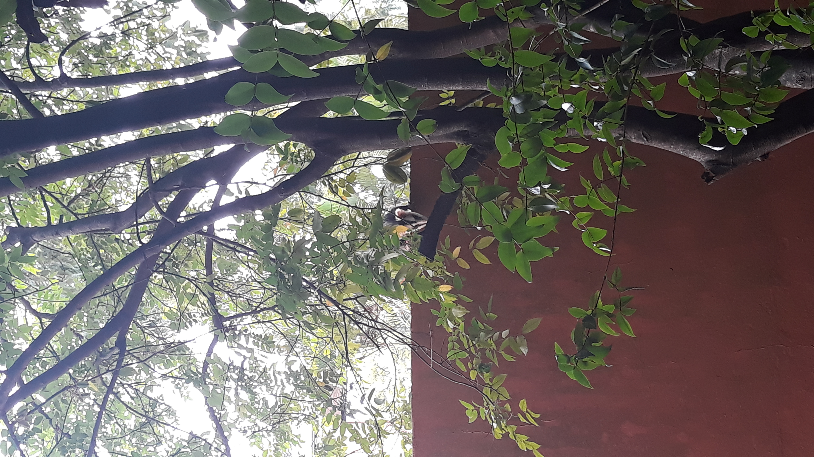
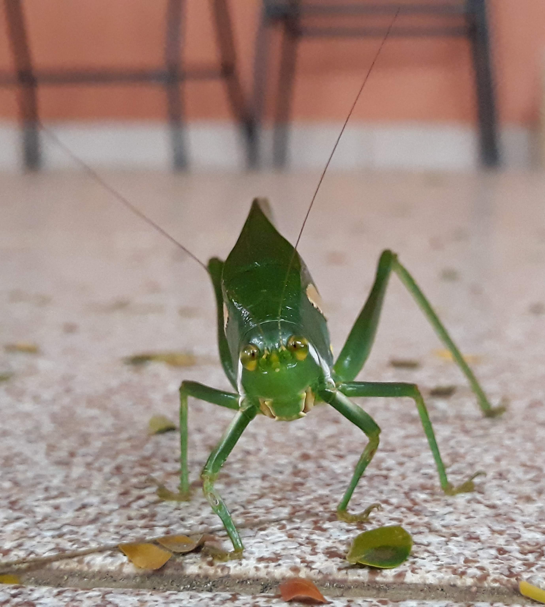

Pandemia
(Talvez esse tópico deveria deveria chamar,na verdade, quintal de casa)
Gambá
Vizinho, gambá, desfilando no muro, para ir em busca de frutas.
Tentando descobrir como chegar ao pé de carambola, para come-lás.
Grilo
O grilo com a beleza natural dele.